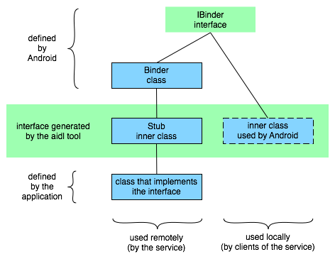

Android开发之旅：进程与线程
引言
当应用程序的组件第一次运行时，Android将启动一个只有一个执行线程的Linux进程。默认，应用程序所有的组件运行在这个进程和线程中。然而，你可以安排组件运行在其他进程中，且你可以为进程衍生出其它线程。本文从下面几点来介绍Android的进程与线程：
1、进程2、线程
2.1、远程过程调用（Remote procedure calls，RPCs）
2.2、线程安全方法
1、进程
组件运行于哪个进程中由清单文件控制。组件元素——<activity>、<service>、<receiver>、<provider>，都有一个process属性可以指定组件运行在哪个进程中。这个属性可以设置为每个组件运行在自己的进程中，或者某些组件共享一个进程而其他的不共享。他们还可以设置为不同应用程序的组件运行在同一个进程中——假设这些应用程序共享同一个Linux用户ID且被分配了同样的权限。<application>元素也有process属性，为所有的组件设置一个默认值。
所有的组件都在特定进程的主线程中实例化，且系统调用组件是由主线程派遣。不会为每个实例创建单独的线程，因此，对应这些调用的方法——诸如View.onKeyDown()报告用用户的行为和生命周期通知，总是运行在进程的主线程中。这意味着，没有组件当被系统调用时应该执行很长时间或阻塞操作（如网络操作或循环计算），因为这将阻塞进程中的其它组件。你可以为长操作衍生独立的线程。
public boolean onKeyDown(int keyCode,KeyEvent event)：
默认实现KeyEvent.Callback.onKeyMultiple()，当按下视图的KEYCODE_DPAD_CENTER或KEYCODE_ENTER然后释放时执行，如果视图可用且可点击。
参数：
keyCode-表示按钮被按下的键码，来自KeyEventevent-定义了按钮动作的KeyEvent对象
返回值：
如果你处理事件，返回true；如果你想下一个接收者处理事件，返回false。
当内存剩余较小且其它进程请求较大内存并需要立即分配，Android要回收某些进程，进程中的应用程序组件会被销毁。当他们再次运行时，会重新开始一个进程。
当决定终结哪个进程时，Android会权衡他们对用户重要性的相对权值。例如，与运行在屏幕可见的活动进程相比（前台进程），它更容易关闭一个进程，它的活动在屏幕是不可见（后台进程）。决定是否终结进程，取决于运行在进程中的组件状态。关于组件的状态，将在后面一篇——组件生命周期中介绍。
2、线程
虽然你可能会将你的应用程序限制在一个进程中，但有时候你会需要衍生一个线程做一些后台工作。因为用户界面必须很快地响应用户的操作，所以活动寄宿的线程不应该做一些耗时的操作如网络下载。任何不可能在短时间完成的操作应该分配到别的线程。
线程在代码中是用标准的Java线程对象创建的，Android提供了一些方便的类来管理线程——Looper用于在线程中运行消息循环、Handler用户处理消息、HandlerThread用户设置一个消息循环的线程。
Looper类
该类用户在线程中运行消息循环。线程默认没有消息循环，可以在线程中调用prepare()创建一个运行循环；然后调用loop()处理消息直到循环结束。大部分消息循环交互是通过Handler类。下面是一个典型的执行一个Looper线程的例子，分别使用prepare()和loop()创建一个初始的Handler与Looper交互：
class LooperThread extends Thread { public Handler mHandler;
publicvoid run() {
Looper.prepare();
mHandler = new Handler() {
publicvoid handleMessage(Message msg) {
// process incoming messages here
}
};
Looper.loop();
}
}
更多的关于Looper的信息及Handler、HandlerThread请参阅相关资料。
2.1、远程过程调用（Remote procedure calls，RPCs）
Android有一个轻量级的远程过程调用机制——方法在本地调用却在远程（另外一个进程中）执行，结果返回给调用者。这需要将方法调用和它伴随的数据分解为操作系统能够理解的层次，从本地进程和地址空间传输到远程进程和地址空间，并重新组装调用。返回值以相反方向传输。Android提供了做这些工作的所有代码，这样我们可以专注于定义和执行RPC接口本身。
一个RPC接口仅包含方法。所有的方法同步地执行（本地方法阻塞直到远程方法执行完成），即使是没有返回值。简言之，该机制工作原理如下：首先，你用简单的IDL（interface definition language，接口定义语言）声明一个你想实现的RPC接口。从这个声明中，aidl工具生成一个Java接口定义，提供给本地和远程进程。它包含两个内部类，如下图所示：

内部类有管理你用IDL定义的接口的远程过程调用所需要的所有代码。这两个内部类都实现了IBinder接口。其中之一就是在本地由系统内部使用，你写代码可以忽略它。另外一个是Stub，扩展自Binder类。除了用于有效地IPC（interprocess communication）调用的内部代码，内部类在RPC接口声明中还包含方法声明。你可以定义Stub的子类实现这些方法，如图中所示。
通常情况下，远程过程有一个服务管理（因为服务能通知系统关于进程和它连接的其它进程的信息）。它有由aidl工具生成的接口文件和Stub子类实现的RPC方法。服务的客户端仅有由aidl工具生成的接口文件。
下面介绍服务如何与它的客户端建立连接：
服务的客户端（在本地端的）应该实现onServiceConnected() 和onServiceDisconnected() 方法，因此当与远程服务建立连接成功和断开连接是会通知它。然后调用bindService() 建立连接。
服务的onBind()方法将实现为接受或拒绝连接，者取决于它接受到的意图（该意图传送到binServive()）。如果连接被接受，它返回一个Stub子类的实例。
如果服务接受连接，Android调用客户端的onServiceConnected()方法且传递给它一个IBinder对象，返回由服务管理的Stub子类的一个代理。通过代理，客户端可以调用远程服务。
这里只是简单地描述，省略了一些RPC机制的细节。你可以查阅相关资料或继续关注Android开发之旅，后面将为你奉上。
2.2、线程安全方法
在一些情况下，你实现的方法可能会被不止一个线程调用，因此必须写成线程安全的。这对远程调用方法是正确的——如上一节讨论的RPC机制。当从IBinder进程中调用一个IBinder对象中实现的一个方法，这个方法在调用者的线程中执行。然而，当从别的进程中调用，方法将在Android维护的IBinder进程中的线程池中选择一个执行，它不在进程的主线程中执行。例如，一个服务的onBind()方法在服务进程的主线程中被调用，在onBind()返回的对象中执行的方法（例如，实现RPC方法的Stub子类）将在线程池中被调用。由于服务可以有一个以上的客户端，所以同时可以有一个以上的线程在执行同一个IBinder方法。因此，IBinder的方法必须是线程安全的。
同样，一个内容提供者可以接受其它进程产生的数据请求。虽然ContentResolver 和 ContentProvider 类隐藏进程通信如何管理的，对应哪些请求的ContentResolver 方法——query()、insert()、delete()、update()、getType()，在内容提供者的进程的线程池中被调用，而不是在这一进程的主线程中。因为这些方法可以同时从任意数量的线程中调用，他们也必须实现为线程安全的。